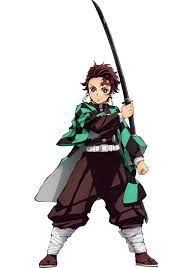
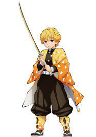
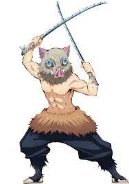
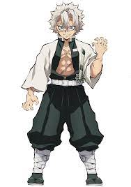
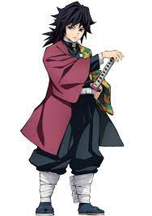
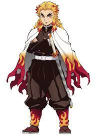
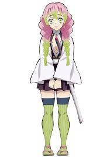
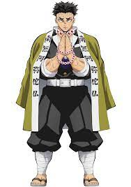
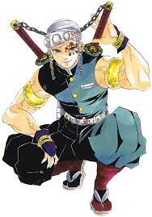
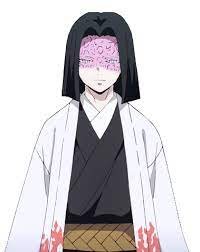

The Demon Slayers
|  Tanjiro Kamado "In order to soothe the spirits of those it killed, and to make sure it claims no further victims... I will swing my blade down and lop off the head of any demon without mercy! But... I will not belittle those who regret their actions and suffer over the things they did as demons. Because demons were once human. Because they were like me". |
 Zenitsu Agatsuma " hate myself more than anyone. I always think I have to get my act together, but I end up cowering, running away, sniveling. I want to change. I want to be a competent person". |
|  Inosuke Hashibara "We're comrades... And like brothers... So if someone starts to stray from the path, we all stop him. No matter how hard or painful it is... We walk the right path..". |
 Sanem Shinazagawa "Why do you think I went so far as to kill our mother? To protect you. You should have had a house somewhere and raised a family and grow old. To make up for what I couldn't do for mother and our little brothers and little sisters, you should have had a wife and children and made them happy. And I would've never... let a demon get near you". |
|  Giyu Tomioka "Don't cry. Don't despair. Now's not the time for that. [...] Feel the rage. The powerful pure rage of not being able to forgive will become your unswerving drive to take action"! |
 Kyojuro Rengoku "Life is a series of decisions. You never have unlimited options or unlimited time to think, but what you choose in that instant defines who you are". |
|  Mitsuri Kanroji "Is it okay for a girl to be this strong? I still worry that someone may ask that, as though I'm not human. In my fear, I was suppressing my strength. But not anymore. Leave this to me. I will protect everyone". |
 Gyomei Himjima "No one becomes a Hashira with such half-hearted determination. That horrible insult... makes me boil with anger. [...] I don't need to understand it. We are proud to live and die as human beings. Don't act like your worthless ideas are supreme and force them on others". |
|  Tengen Uzui "This is a big country and it's teeming with incredible people. Some are a mystery... and a few have a natural way with the sword and become a Hashira in two months. So I'm chosen? Gimme a break. You have no clue how much I've lost over the years"! |
 Kagaya Ubuyashiki (Leader of the Demon Slayers) "I know what eternity is. Eternity is human feeling. Only human feelings last forever... and are undying". |